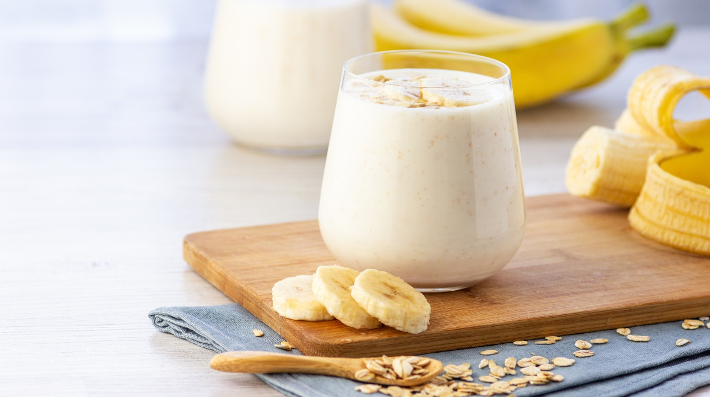

Recetas saludables
Ensalada de espinacas y quinoa (perder peso)

Ingredientes:
- 200g de espinacas frescas
- 1 taza de quinoa cocida
- 1 aguacate maduro
- 1 tomate grande
- 1 pepino
- 50g de nueces picadas
- Aceite de oliva virgen extra
- Jugo de limón
- Sal y pimienta al gusto
Pasos:
- Lava bien las espinacas y escúrrelas.
- Corta el aguacate, el tomate y el pepino en cubos.
- En un tazón grande, mezcla las espinacas, la quinoa, el aguacate, el tomate, el pepino y las nueces.
- Añade aceite de oliva, jugo de limón, sal y pimienta al gusto y mezcla bien.
- Sirve la ensalada en platos individuales y disfruta.
Valor nutricional por porción:
- Calorías: Aproximadamente 250 kcal
- Proteínas: 8g
- Carbohidratos: 25g
- Grasas: 15g
- Fibra: 7g
- Vitaminas y minerales: Rico en vitamina A, vitamina C, hierro, calcio y magnesio.
Batido de plátano y avena (aumentar peso)

Ingredientes:
- 2 plátanos maduros
- 1 taza de leche entera
- 1/2 taza de avena
- 2 cucharadas de miel
- 1 cucharadita de canela
- Cubitos de hielo (opcional)
Pasos:
- Pela los plátanos y córtalos en trozos.
- Coloca los plátanos, la leche, la avena, la miel y la canela en una licuadora.
- Mezcla todos los ingredientes hasta obtener una consistencia suave y homogénea.
- Sirve el batido en un vaso grande y añade cubitos de hielo si lo deseas.
- Disfruta de tu batido de plátano y avena para aumentar de peso.
Valor nutricional por porción:
- Calorías: Aproximadamente 350 kcal
- Proteínas: 6g
- Carbohidratos: 70g
- Grasas: 5g
- Fibra: 5g
- Vitaminas y minerales: Rico en potasio, magnesio, vitamina B6 y vitamina C.